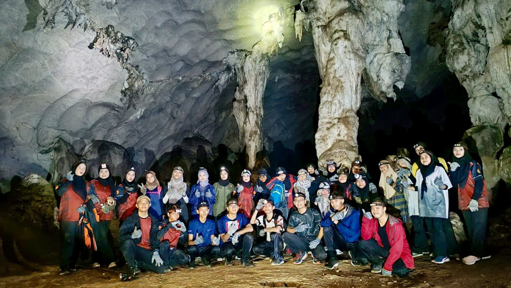

Daily Life

Travel
Trip To Hong KongEarlier this year, I traveled to Hong Kong to participate in an international robotics tournament. The event was a thrilling experience, filled with creativity, competition, and collaboration among some of the brightest minds in the field. After the intense days of the tournament, my team and I decided to unwind with a visit to Hong Kong Disneyland. |
|
|  |
Cave Exploration: Gua Gunung KeriangAs I ventured deeper into the cave, the air grew cooler, and my flashlight flickered ominously. Suddenly, a faint whisper echoed through the darkness, sending shivers down my spine as I realized I wasn't alone. With pounding heart, I stumbled upon an ancient chamber filled with mysterious artifacts, unlocking secrets lost to time. |
Hobbies
Playing GamesIn my spare time, I delve into the immersive worlds of video games, finding solace and excitement in their virtual landscapes. Genshin Impact and Honkai Star Rail are two of my go-to escapes, where I can embark on thrilling adventures and unravel captivating stories. Whether battling formidable foes or exploring breathtaking vistas, gaming fuels my imagination and offers endless entertainment. |
|
VolleyballVolleyball is my passion, and as a middle player, I thrive on the dynamic energy of the game's fast-paced action. Positioned strategically at the heart of the court, I revel in the challenge of both offensive and defensive plays, working tirelessly to block shots and execute powerful spikes. With each set and spike, I feel the rush of adrenaline and the camaraderie of teamwork, making every match an exhilarating experience. |